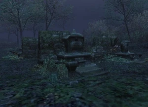

Level 75 reference · Zenith rules


This headstone is the grave of the former captain of the Black Coffin - Jazaraat. It is located in a graveyard at E-10 on Azouph Isle in Caedarva Mire. After Mission 14 you can get a new Ephramadian Gold Coin by clicking on the headstone without having to fight any NMs.
Involved in Mission: Aht Urhgan Mission 13: Lost Kingdom
Adapted from Eden Wiki: Jazaratt's Headstone · Contributors and history · CC BY-SA 4.0. Revision 44915. Layout, links and optional background text adapted for Zenith.